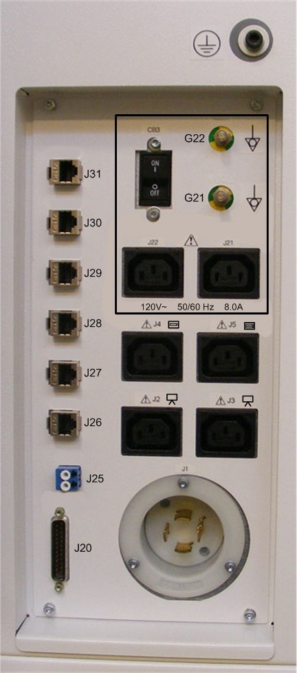
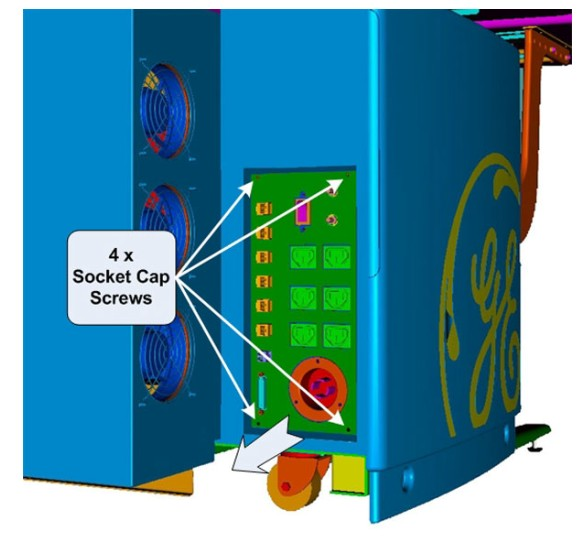
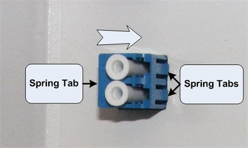
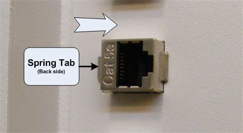
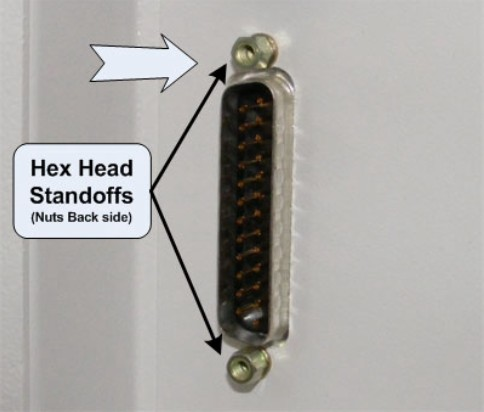
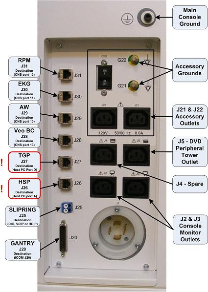

Operating Documentation
Direction 5193574-800, Rev# 22
LightSpeed 7.X Service Methods
Module Version 1.0, Version Date 9/29/08
Operating Documentation |
| Required Persons | Preliminary Reqs | Procedure | Finalization |
|---|---|---|---|
| 1 |
This procedure describes and illustrates the steps necessary to replace connectors located on the Rear Bulkhead Panel of the Operator Console. Since the Rear Bulkhead Panel utilizes connectors with disconnects on both the front and rear of the Rear Bulkhead Panel, only the connectors will be supplied as FRUs. The sheet metal panel should last the life of the equipment.
| Last revised: | 15 July 2008 |
Illustration 1: Rear Bulkhead Panel

| Item | Qty | Effectivity | Part# | Manufacturer | |
|---|---|---|---|---|---|
| Standard FE Toolkit | 1 | - | - | - | |
| 3 mm Hex Key Wrench | 1 | - | - | - | |
| Item | Qty | Effectivity | Part# | Manufacturer | |
|---|---|---|---|---|---|
| Ethernet Panel Connector | 6 | - | 5304795 | - | |
| Fiber Optic Connector | 1 | - | 5122507 | - | |
| Gantry (DB-25) Connector | 1 | - | 5128594 | - | |
| ||||
| ELECTROCUTION HAZARD | ||||
| HIGH VOLTAGE PRESENT | ||||
| USE PROPER LOCKOUT / TAGOUT PROCEDURES BEFORE REPLACING THE COMPONENTS. |
| ||||
| FOLLOW ALL REQUIRED SAFETY AND PPE PROCEDURES CUSTOMARY FOR YOUR ORGANIZATION WHEN WORKING ON THIS PRODUCT. | ||||
| Condition | Reference | Effectivity |
|---|---|---|
Access to both the front and rear of the Operator Console is required. Move the console away from walls and remove obstacles in room. | - | - |
Only trained service personnel should service the GE CT Scanner. | - | - |
Select one of the following methods to power off the Operator Console:
If applications are running, click the Shut Down icon and select Shut Down.
If applications are down, open a Unix Shell using the Toolchest. Type: {ctuser@hostname} halt. Press <Enter>.
The Operator Console monitor will display a ‘System Halted’ message when it is acceptable to power off the Operator Console.
Power OFF the Operator Console at the front panel switch. (See Illustration 2.)
Illustration 2: Console Power Switch

Perform prescribed Lockout/Tagout procedure. For added protection, disconnect the Twist-N-Lock Main Power Cable from the rear of the console.
Disconnect cables connected to the Rear Bulkhead Panel.
| NOTE: | Take care to protect the connector ends of the Fiber Optical Cables. |
| NOTE: | Take care to check that the cables are properly labeled for their respective connections. |
Uninstall Rear Bulkhead Panel by removing the four (4) 4mm socket cap mounting screws holding the panel to the console chassis.
Illustration 3: Rear Bulkhead Panel Mounting

Carefully remove the Rear Bulkhead Panel from the console chassis.
| NOTE: | There is ample cable length inside the console to allow the removal of the panel. |
Disconnect Dual Fiber from the back side of the Rear Bulkhead Panel.
| NOTE: | Take care to protect the connector ends of the Fiber Optical Cables. |
| NOTE: | Take care to check that the cables are properly labeled for their respective connections. |
Remove the Fiber Optic connector from the Rear Bulkhead Panel, by compressing the spring retention clips on the sides of the Fiber Optic connector, and push the connector free from the panel.
Illustration 4: Fiber Optic Connector Removal

Install the new Fiber Optic connector on the Rear Bulkhead Panel, by pressing the new connector into the panel from the back side until the spring retention clips on the side of the Fiber Optic connector snaps into place.
Reconnect the internal Fiber Optic cable to the new connector.
Disconnect the Ethernet cable from the back side of the Rear Bulkhead Panel.
| NOTE: | Take care to check that the Ethernet cable is properly labeled for its respective connection. |
Remove the Ethernet connector from the Rear Bulkhead Panel, by releasing the spring clip holding the connector in the panel, and push the connector free from the panel.
Illustration 5: Ethernet Connector Removal

Install the new Ethernet connector on the Rear Bulkhead Panel, by pressing the new connector into the panel from the backside until the spring retention clip on the side of the Ethernet connector snaps into place.
Reconnect the internal Ethernet cable to the new connector.
Disconnect TGP (DB-25) cable from the backside of the Rear Bulkhead Panel.
Remove the Gantry (DB-25) connector from the Rear Bulkhead Panel, by removing the two (2) hex standoffs and nuts holding the DB-25 connector to the panel.
Illustration 6: Gantry (DB-25) Connector Removal

Install the new DB-25 connector on the Rear Bulkhead Panel, by holding the new connector on the panel from the back side and install the Hex Head Standoff and nuts removed earlier.
Reconnect the internal Gantry (DB-25) cable to the new connector.
Install the Rear Bulkhead Panel on the console chassis using the four (4) 4mm socket cap mounting screws removed earlier. Torque to 2.9 N-m.
| NOTE: | Take care not to pinch any cables in between the Rear Bulkhead Panel and the Console Chassis. |
Reconnect the removed external cables to the Rear Bulkhead Panel.
| NOTE: | FOR PROPER OPERATION, IT IS CRITICAL THAT ALL ETHERNET CABLES BE PLUGGED INTO SPECIFIC LOCATIONS ON THE REAR BULKHEAD PANEL. |
Illustration 7: Rear Bulkhead Panel Connections

Reconnect the Twist-N-Lock Main Power Cable from rear of console and remove Lockout Tagout protection applied earlier.
Apply power to the console using the operator console power switch.
Test the replacement Rear Bulkhead Panel connector by verifying that communications and signal paths have been restored. Verify that the system boots properly and that gantry and table are reset.
No other verification necessary.
Refer to System Scanning Test to confirm proper operation.